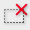

Cropping Frame Types
(1) Active cropping frame (rotating thick broken lines)
The settings on the Basic Mode tab or Advanced Mode tab will be applied.
(2) Selected cropping frame (stationary thick broken lines)
The settings will be applied to the active cropping frame and selected cropping frames simultaneously. You can select multiple cropping frames by clicking them while pressing the command key.
(3) Unselected cropping frame (stationary thin broken lines)
The settings will not be applied.
 Note
Note-
Active cropping frame and selected cropping frames are displayed in whole image view.
Initial Cropping Frame
In thumbnail view
Cropping frame is not displayed initially. Drag the mouse over a frame to create a cropping frame.
In whole image view
A cropping frame (active cropping frame) is displayed automatically around the preview image according to the document size. You can also create a cropping frame by dragging the mouse in the Preview area.
Note-
Cropping frames are set according to the document size (Auto Crop) by default. For details, see Cropping Frame on Previewed Images in "Preview Tab" (Preferences dialog).
Adjusting a Cropping Frame
The cursor will change into (Arrow) when it is positioned over a cropping frame. If you click and drag the mouse in the direction of the arrow, the cropping frame will expand or contract accordingly.

The cursor will change into (Crosshair arrow) when it is positioned within a cropping frame. Click and drag the mouse to move the entire cropping frame.
Note-
On the Advanced Mode tab, you can specify the cropping frame size by entering the values into
 (Width) and
(Width) and  (Height) in Input Settings.
(Height) in Input Settings. -
You can rotate a cropping frame 90 degrees by clicking (Switch Aspect Ratio). However, (Switch Aspect Ratio) is not available when Output Size is Flexible.
Creating Multiple Cropping Frames
In thumbnail view
You can only create one cropping frame per image.
In whole image view
Click and drag the mouse in a space outside the existing cropping frame to create a new cropping frame in the Preview area. The new cropping frame will be the active cropping frame, and the old cropping frame will be the unselected cropping frame.
You can create multiple cropping frames and apply different scan settings to each cropping frame.
You can also select multiple cropping frames by clicking them while pressing the command key.
If you select multiple cropping frames and change the settings on a tab at the right of ScanGear, the settings will be applied to all the selected cropping frames.
When you create a new cropping frame, it retains the settings of the latest cropping frame.
Note-
Create up to 12 cropping frames.
-
Scanning takes longer than usual when multiple cropping frames are selected.
Deleting Cropping Frames
In thumbnail view
To delete a cropping frame, click an area outside the cropping frame on an image.
In whole image view
To delete a cropping frame, select it and click  (Remove cropping frame) on the Toolbar. Alternatively, press the delete key.
When there are multiple cropping frames, all the selected cropping frames (active cropping frame and selected cropping frames) are deleted simultaneously.